A PAGE FROM THE NOTEBOOK
【なぜ？】非常口のマークは緑？
#非常口#色#ピクトグラム#安全色#防災IN THIS NOTE
この記事でわかること
規格の色分けでは緑が「安全」
今の規格で非常口がどう位置づけられているかは、「安全色」という色の役割分担から確かめられます。日本の安全色を定めるJIS Z 9103では、赤は防火・停止・禁止・高度の危険、黄は注意、緑は安全・衛生・進行を表します。この規格は2018年4月20日に改正され、色覚の多様性に配慮して色相・明度・彩度が調整されました。

国際規格のISO 7010でも、色と形の組み合わせで標識の種類を分けています。禁止は赤い円に斜線、指示は青い円、警告は黄色い三角、「安全状態」（安全設備や出口）は緑の四角、防火設備は赤の四角です。非常口のE001（左向き）とE002（右向き）は、緑の「安全状態」に入っています。
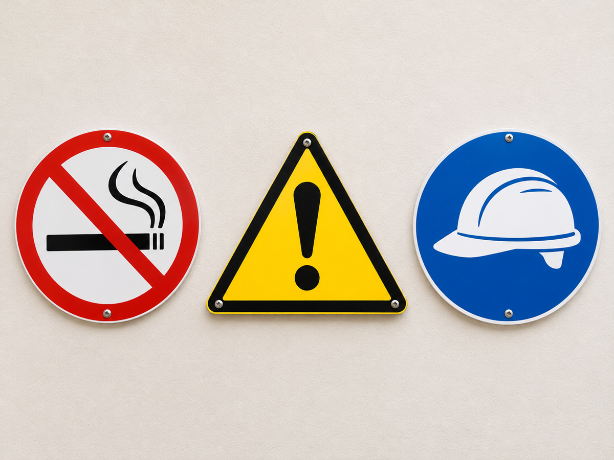
この役割分担から考えると、今の規格の中では非常口を赤にしにくいことが分かります。赤の四角はすでに消火器などの防火設備に使われているので、出口も赤にすると「消火設備の場所」と「逃げる場所」が同じ色の仲間になってしまいます。ただし、これは今の規格の割り当てから読み取った考察です。「赤が防火用だったから非常口が緑になった」という順番の因果を示す資料は、今回は確認できていません。
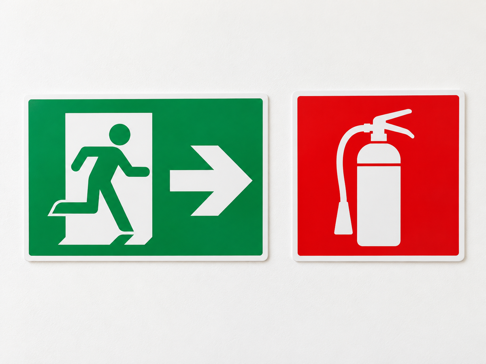
色で分けることには限界もあります。JISの改正で色覚の多様性への配慮が加えられたように、色の見え方は人によって違います。ISO 7010は色に加えて円・三角・四角という形でも種類を分けています。色分けは見分ける手掛かりの一つで、図記号や形と組み合わせて使う仕組みだと読めます。規格を作った人たちがなぜ安全の色に緑を選んだのか、その意図を示す一次資料は今回見つかりませんでした。
「炎の中で目立つ」説の確かさ
一般向けによく見かける説明は「赤い炎の中で最も目立つのは補色の緑だから」というものです。消防設備士の青木俊輔さんは、緑と赤は互いを引き立てる補色の関係にあると説明しています。乗りものニュースの記事も、火災時に赤い炎の中で最も目立つのが緑なので、消防法で誘導標識（誘導灯）に緑が義務付けられている、と書いています。
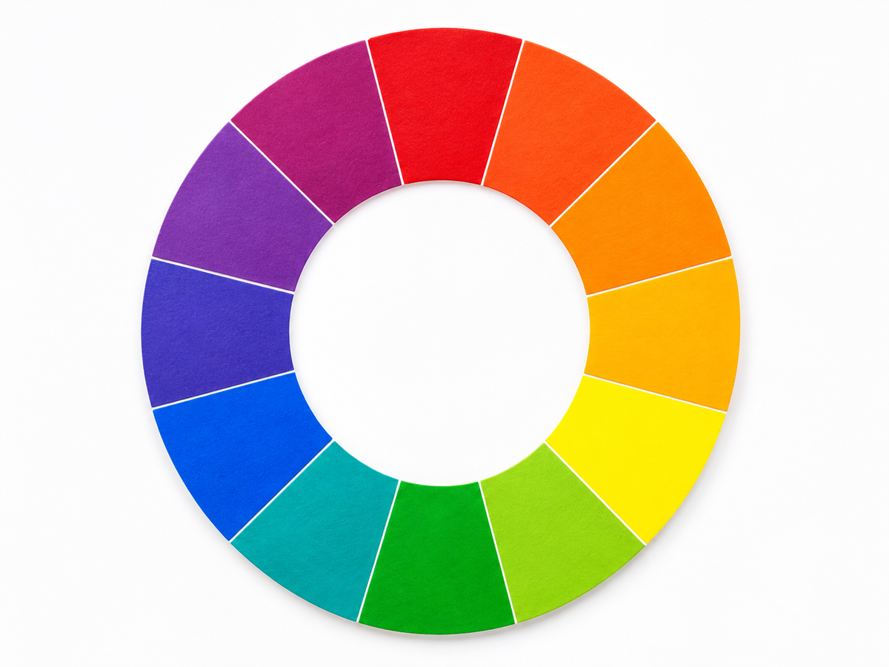
この説明は、色の組み合わせの理屈として分かりやすいものです。ただ、火災では煙で標識が見えにくくなる場合もあり、いつも「赤い炎を背にした緑」という場面になるとは限りません。週刊女性PRIMEの記事によれば、1972年の千日デパート火災のあと、文字だけの非常口表示は煙に紛れて目立ちにくいことが問題になりました。
煙の中での見え方を測った研究に、米国NISTの1990年の報告があります。21人が、煙のない環境と煙の中で、従来型とELの出口標識の見やすさを評価しました。煙の中では、標識全体の明るさ（輝度）が見やすさを決める主な要因の一つで、明るさのむらの少なさも重要でした。煙のない条件では、むらの少なさや標識の作りがより大きな役割を持っていました。約10cd/m²以上で有効だったのは一部のEL標識での実験結果で、出口標識全般の基準ではありません。

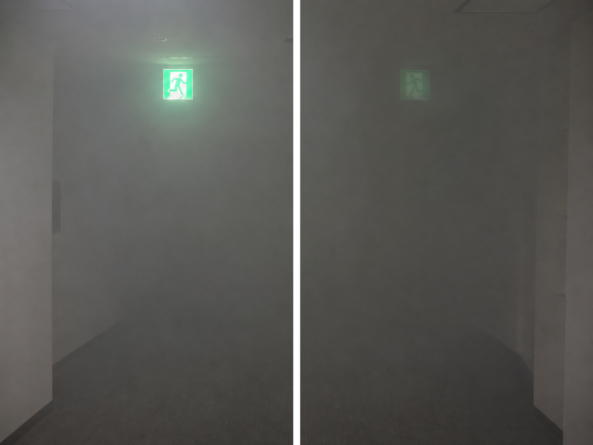
この報告の要旨では、色・標識の作り・輝度を系統的に変えて調べる追加研究が必要だとされています。今回読めたのは要旨だけなので、この研究の中で赤と緑を比べたかどうかは確認できませんでした。1990年より後の研究がどこまで進んでいるかも、今回は調べきれていません。補色説がどのように広まったのか、緑が赤より見やすいことを示す実験があるのかも、今回の資料からは判断できません。そのため動画では「よく言われる説明」として紹介するのが安全です。
走る人マークが生まれ世界標準へ
もともと日本の非常口は「非常口」という漢字3文字で示されていました。週刊女性PRIMEの記事によると、1972年の千日デパート火災、1973年の大洋デパート火災のあと、文字だけの表示は煙の中で目立ちにくいと問題になり、人が走る絵柄が考えられました。
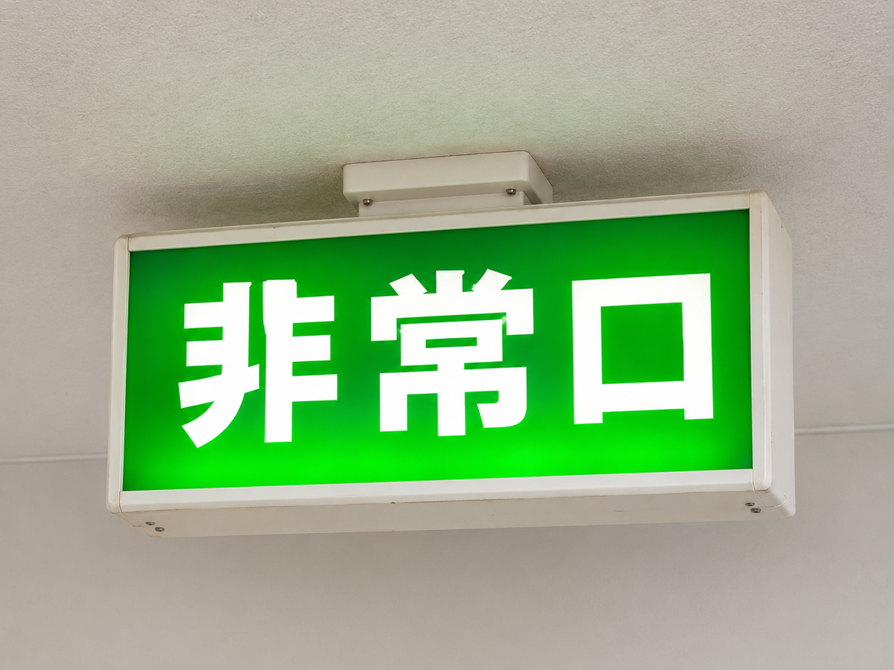
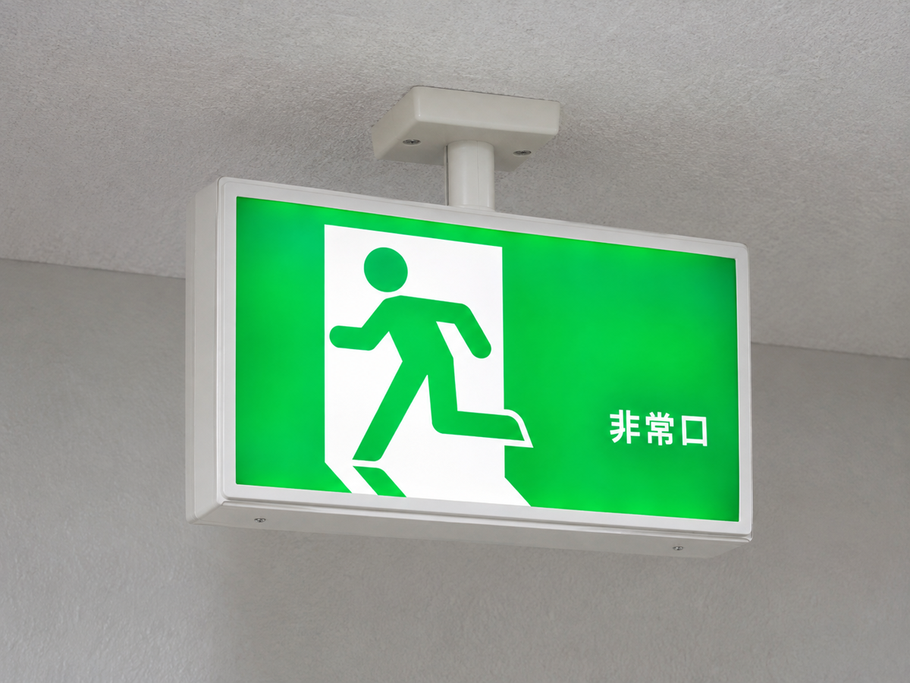
太田幸夫さん本人の寄稿によると、1979年に消防庁がアイデアを公募し、全国から3000点あまりが集まりました。入選作をもとに58通りのデザイン案を作り、そこから1つが選ばれています。「入選作にあった足先の影を残してほしい」という条件があり、影と壁の位置関係を整えるために全身を細かく調整したそうです。Wikipediaによれば、入選したのは小谷松敏文さんの作品で、太田さんの改良を経て完成しました。デザインは1982年1月20日に消防庁が告示し、同年4月1日から使われています。
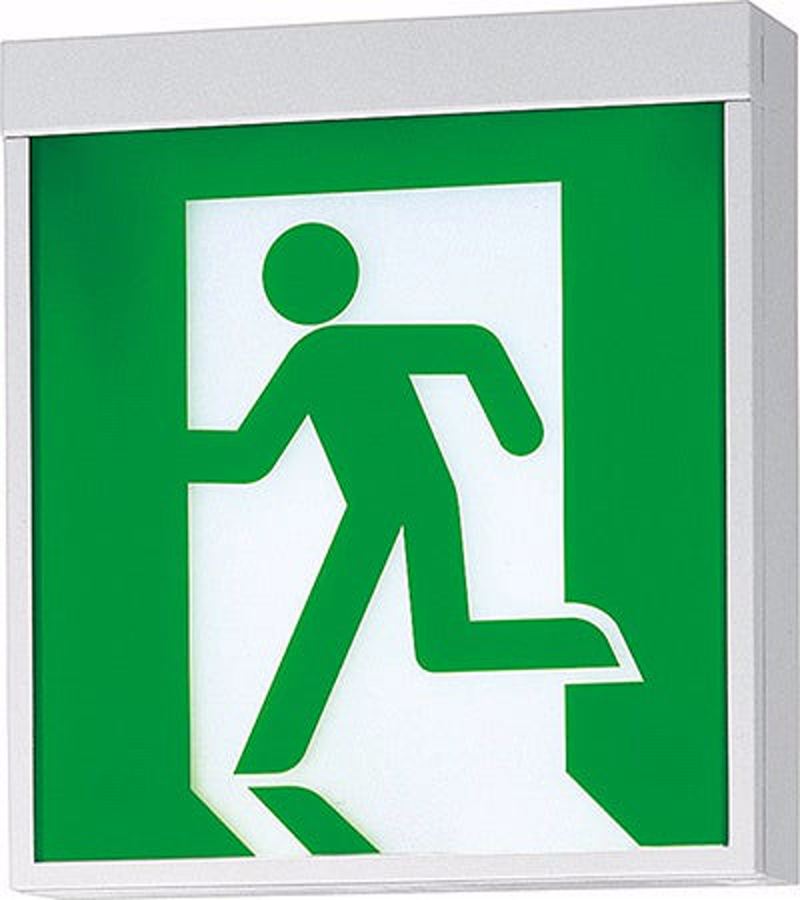
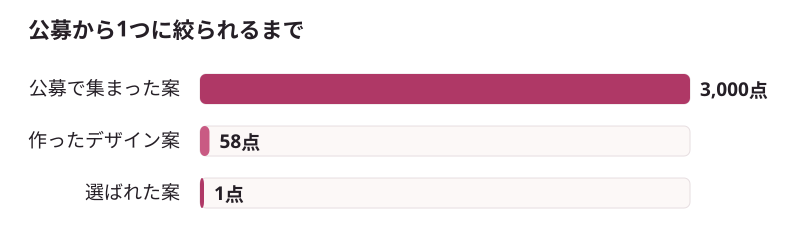
国際規格になるまでには競り合いもありました。日本案は1980年にISOへ出されましたが、審議ではソ連案が採用されかけていました。日本案が持ち込まれるとソ連は日本政府に抗議文を送りましたが、1982年4月のロンドン会議で自国案を取り下げ、日本案だけが国際規格案として残りました。その後、日本の告示デザインに下線を加えたものがISO 6309:1987に入り、2003年にはISO 7010に引き継がれました。
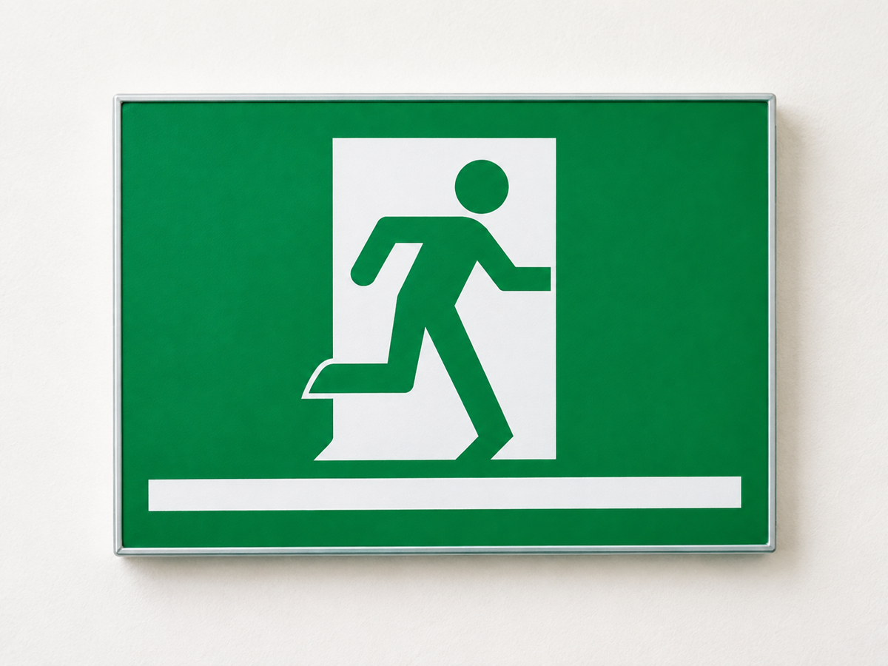
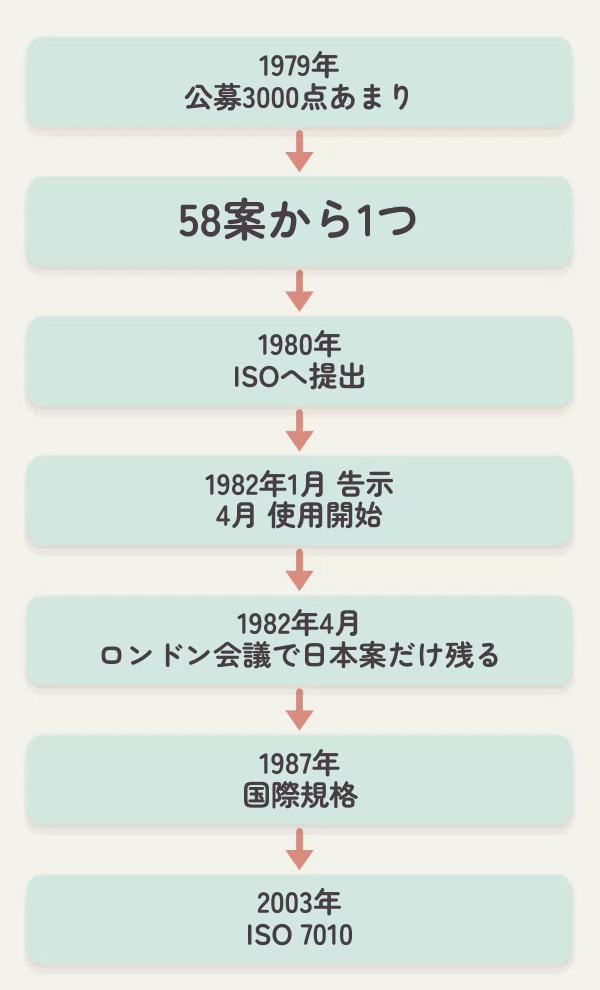
絵柄を改良した経緯や国際会議でのやり取りは寄稿から確認できますが、配色がいつ、どう決まったのかは確認できません。読めた寄稿の公開部分には、緑を選んだ理由は見当たりませんでした。すでにあった安全色の決まりに合わせた可能性は考えられますが、資料による裏付けはなく、推測にとどまります。
緑地と白地の違いや海外の赤
日本の非常口サインには、緑の地に白い絵のものと、白い地に緑の絵のものがあります。乗りものニュースは警視庁警備部災害対策課の公式Xの説明として、緑地の「避難口誘導標識（誘導灯）」は非常口そのものを、白地の「通路誘導標識（誘導灯）」は非常口の方向を示すと紹介しています。Wikipediaには、消防法で誘導灯には緑の使用が義務付けられ、緑地に白、またはその逆なら認められると書かれています。ただし、今回は告示の本文までは確認できていません。
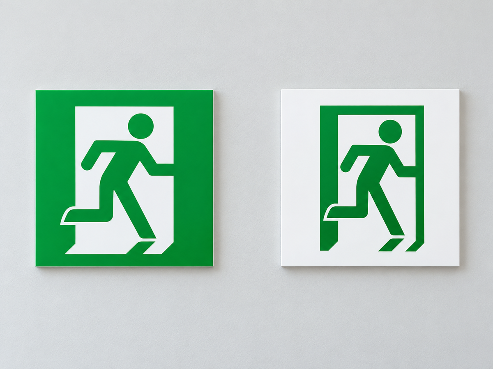
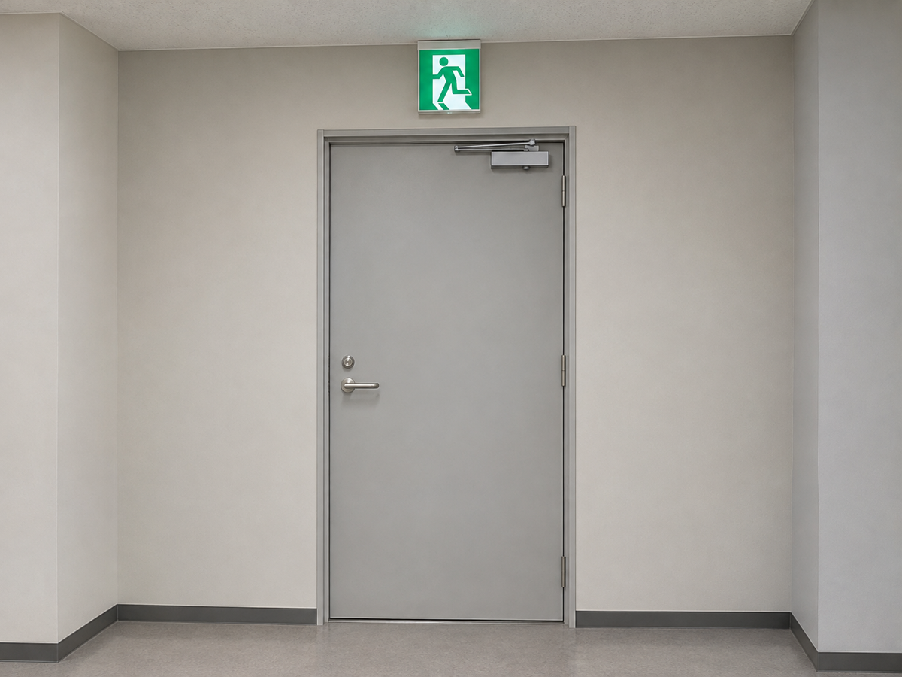
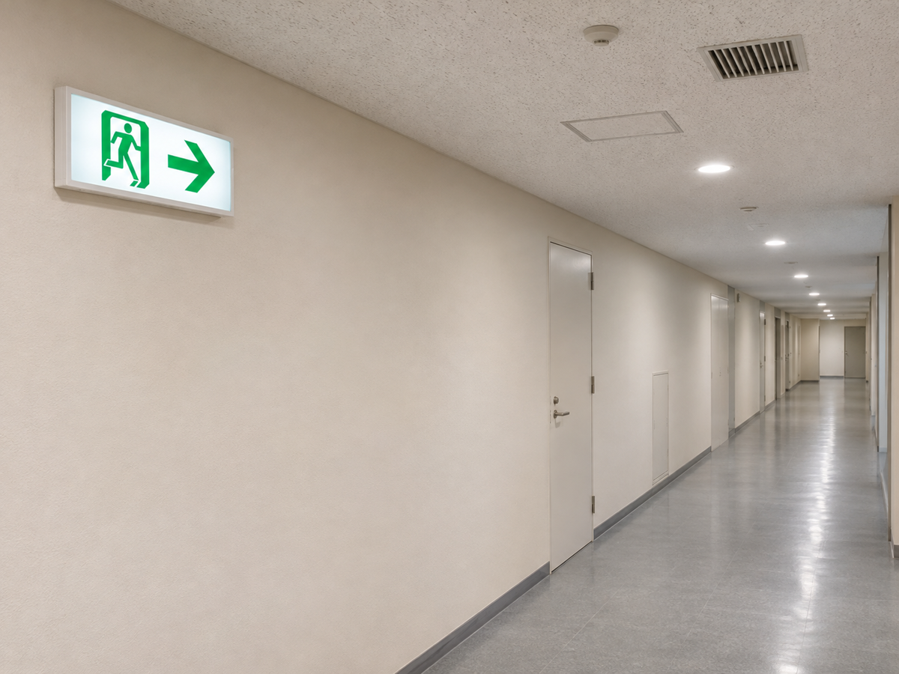
世界中が緑というわけではありません。米国の標識メーカーComplianceSignsの解説によると、労働安全衛生局（OSHA）の規則（29 CFR 1910.37）は、標識の色がはっきり見分けられるなら、色の決まりを州や市に任せているといいます。同じ解説では、米国の多くの都市で赤か緑の「EXIT」が見られ、モンタナ州ヘレナにはオレンジの標識もあるとしています。NFPA 101（2015年版7.10節）については、設置位置・見やすさ・照明を定めると紹介していますが、色の規定には触れていません。
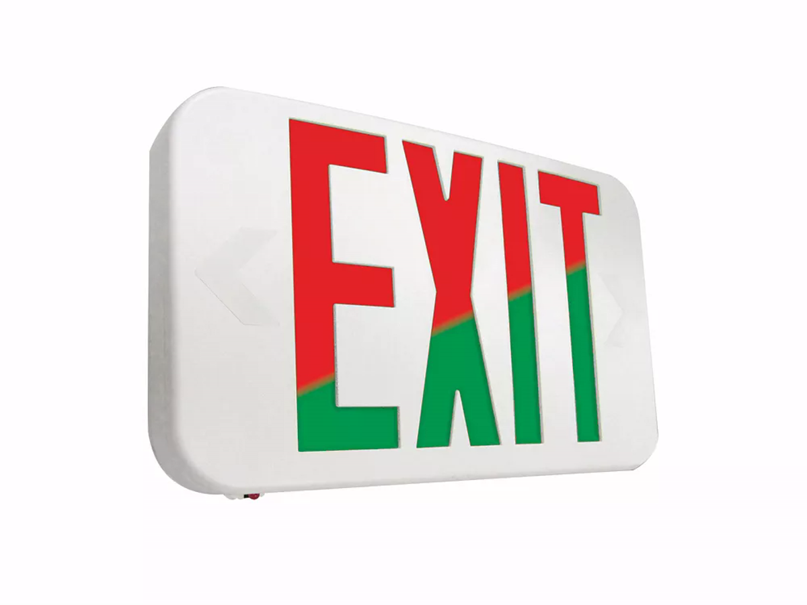
Wikipediaによれば、米国では伝統的に赤い文字が主流で、ニューヨーク市の2014年の建築基準は赤い「EXIT」を定めています。カナダは1995年の国の建築基準で赤い「EXIT」を定めていましたが、2010年の改正でISOの走る人のマークに変わりました。航空機では白地に赤の「EXIT」が多く使われています。
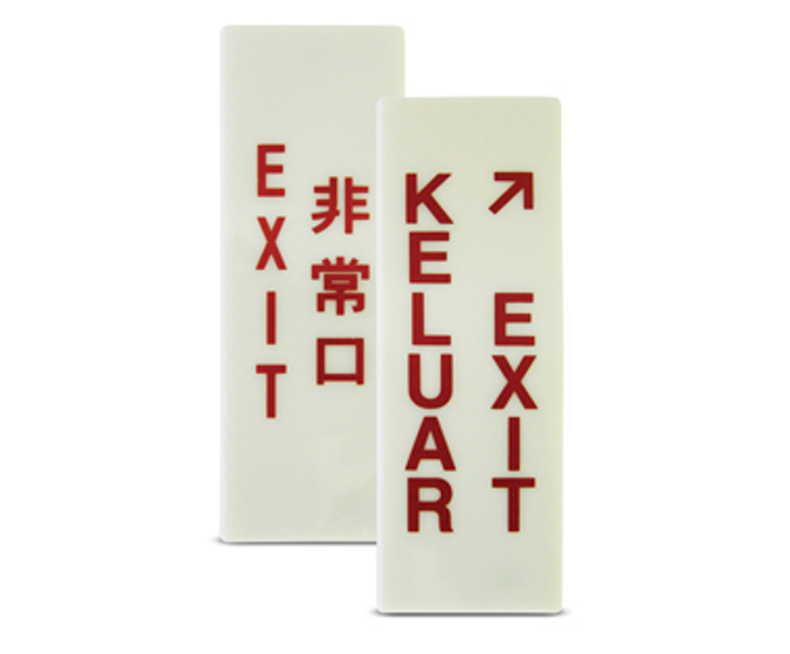
この比較から言えるのは、「非常口＝緑」はどこでも同じ決まりではなく、ISOの体系に合わせた国や地域の選択だということです。カナダのように、赤い文字表示からISOの図記号へ切り替えた例もあります。一方で、赤と緑で避難のしやすさがどう違うのか、色と表示を統一することにどれほど効果があるのかを比べた資料は、今回の調査では見つかりませんでした。
結論
今のJISとISOでは、緑は安全状態や避難口を示す色と決まっている。最初に緑が選ばれた理由は確定できず、「炎の中で目立つ補色」説も今回の資料では実験の裏付けを確認できない。
見解
【事実】今のJISとISOでは、緑は安全状態や避難口を示す色、赤は防火設備などを示す色に割り当てられています。走る人のマークは1979年の公募から生まれ、1982年に日本で告示され、1987年に国際規格に入りました。一方、米国やかつてのカナダでは赤い「EXIT」が使われてきました。【分からないこと】緑が最初に選ばれた理由は、読めた資料からは確定できません。「炎の中で目立つ補色」説は記事や専門家の説明に出てきますが、どう採用されたのか、実験の裏付けがあるのかは今回の資料では確認できませんでした。1990年のNIST報告の要旨でも、煙の中では輝度が主な要因の一つとされ、色・標識の作り・輝度を系統的に変える追加研究が必要とされました。その後の研究がどうなったかは、今回は調べきれていません。【見解】動画では「今の規格で緑は安全や避難の色と決まっている」を確かな事実として示し、補色説は「よく言われる説明」と区別して伝えるのがよいと考えます。赤を防火設備に使う役割分担は見分ける手掛かりになります。ただ、色の見え方には個人差があるので、形や図記号と組み合わせて使う仕組みだと説明すると正確です。